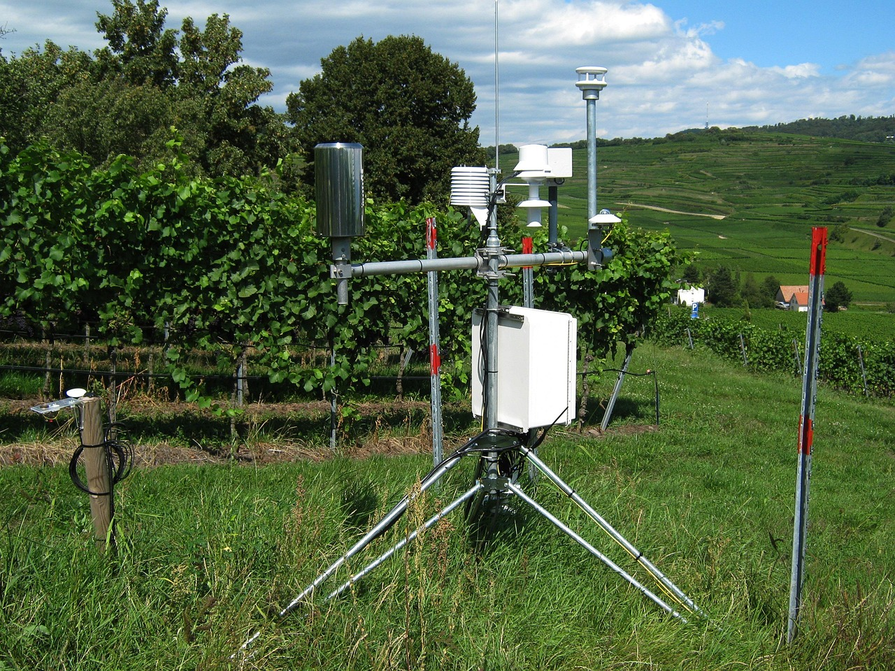

Awan Rendah · < 2 km
Cumulus
Awan kapas yang terbentuk dari konveksi siang hari. Biasanya menandakan cuaca cerah.
Klasifikasi tipe awan secara real-time menggunakan Convolutional Neural Network untuk mendukung observasi meteorologi dan keselamatan penerbangan di Bandar Udara Internasional Juanda Surabaya.
Pengamatan jenis awan secara konvensional dilakukan oleh observer secara manual setiap jam. CloudVision hadir untuk membantu proses tersebut dengan memanfaatkan kecerdasan buatan, sehingga pengamatan menjadi lebih cepat, konsisten, dan dapat diandalkan 24 jam sepanjang hari.
Model CNN dilatih pada ribuan citra awan dari Indonesia dan dataset publik.
Inferensi cepat < 2 detik per citra untuk pengamatan rutin.
Kompatibel dengan klasifikasi awan menurut World Meteorological Organization.

CloudVision diklasifikasikan menurut tiga lapisan atmosfer: awan rendah, menengah, dan tinggi. Setiap genus memiliki karakteristik visual yang unik dan dampak meteorologi yang berbeda.
Awan kapas yang terbentuk dari konveksi siang hari. Biasanya menandakan cuaca cerah.
Lapisan kabut tinggi yang menutupi langit secara merata. Sering menyebabkan gerimis.
Awan badai vertikal raksasa. Berbahaya untuk penerbangan — petir, hujan lebat, hail.
Petak-petak awan menengah. Sering menjadi pertanda perubahan cuaca.
Lapisan awan abu-abu pekat penyebab hujan terus-menerus dengan intensitas sedang.
Awan tipis seperti benang dari kristal es. Menandakan cuaca akan berubah dalam 24 jam.
Unggah citra langit atau awan, sistem akan mengklasifikasikan jenis awan beserta tingkat kepercayaannya secara otomatis.
atau klik untuk memilih file dari perangkat Anda
Format: JPG, PNG · Maks. 10 MBHasil klasifikasi akan ditampilkan di sini setelah Anda mengunggah dan menjalankan deteksi.
Model sedang menganalisis fitur visual
js/main.js pada
fungsi runDetection() — komentar lengkap sudah disediakan.
Citra awan dikumpulkan dari arsip BMKG, Cloud-ImVN dataset, dan CCSN dataset. Total 8.500+ citra dengan label sesuai standar WMO.
Citra diresize ke 224×224, dinormalisasi, dan diaugmentasi (rotation, flip, brightness) untuk meningkatkan generalisasi model.
Arsitektur transfer learning berbasis ResNet-50 dengan fine-tuning pada 50 epoch. Optimizer Adam, learning rate 1e-4, batch size 32.
Validasi menggunakan confusion matrix, precision, recall, dan F1-score. Model di-deploy melalui REST API untuk digunakan dalam aplikasi web.
Pengujian dilakukan menggunakan 1.700 citra test set (20% dari total dataset) yang tidak pernah dilihat model selama proses training.
CloudVision dikembangkan sebagai bagian dari projek akhir program magang mahasiswa di Stasiun Meteorologi Juanda. Untuk informasi lebih lanjut, kolaborasi penelitian, atau penggunaan sistem, silakan hubungi kami.
Bandar Udara Internasional Juanda, Sidoarjo, Jawa Timur 61253
cloudvision.juanda@bmkg.go.id
(031) 8667256